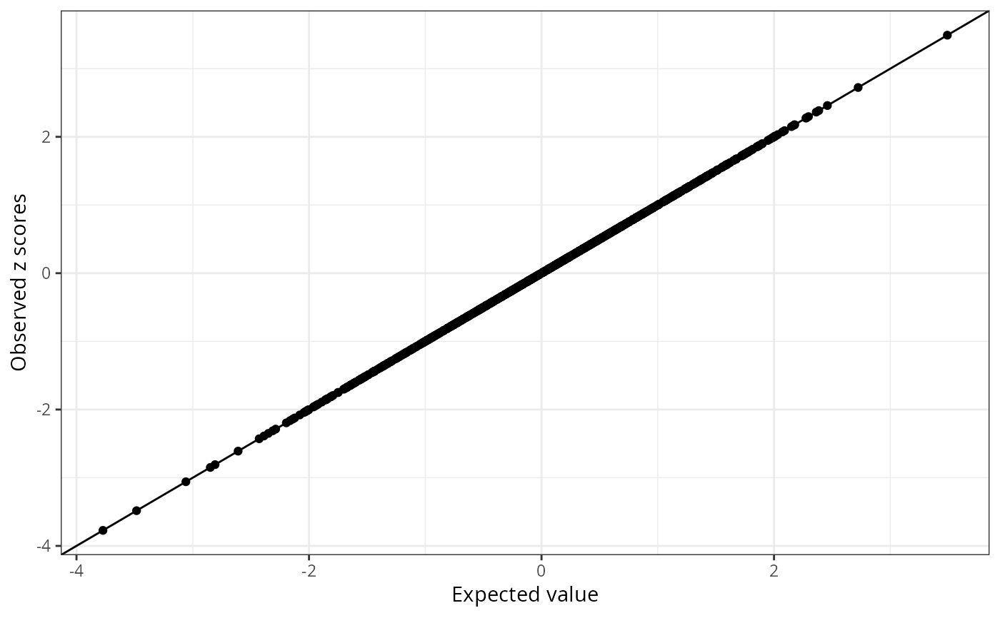

R/susie_utils.R
kriging_rss.RdUnder the null, the rss model with regularized LD matrix is \(z|R,s ~ N(0, (1-s)R + s I))\). We use a mixture of normals to model the conditional distribution of z_j given other z scores, \(z_j | z_{-j}, R, s ~ \sum_{k=1}^{K} \pi_k N(-\Omega_{j,-j} z_{-j}/\Omega_{jj}, \sigma_{k}^2/\Omega_{jj})\), \(\Omega = ((1-s)R + sI)^{-1}\), \(\sigma_1, ..., \sigma_k\) is a grid of fixed positive numbers. We estimate the mixture weights \(\pi\) We detect the possible allele switch issue using likelihood ratio for each variant.
kriging_rss( z, R, r_tol = 1e-08, s = estimate_s_rss(z, R, r_tol, method = "null-mle") )
| z | A p-vector of z scores. |
|---|---|
| R | A p by p symmetric, positive semidefinite correlation matrix. |
| r_tol | Tolerance level for eigenvalue check of positive semidefinite matrix of R. |
| s | an estimated s from |
a list containing a ggplot2 plot object and a table. The plot compares observed z score vs the expected value. The possible allele switched variants are labeled as red points (log LR > 2 and abs(z) > 2). The table summarizes the conditional distribution for each variant and the likelihood ratio test. The table has the following columns: the observed z scores, the conditional expectation, the conditional variance, the standardized differences between the observed z score and expected value, the log likelihood ratio statistics.
# See also the vignette, "Diagnostic for fine-mapping with summary # statistics." set.seed(1) n = 500 p = 1000 beta = rep(0,p) beta[1:4] = 0.01 X = matrix(rnorm(n*p),nrow = n,ncol = p) X = scale(X,center = TRUE,scale = TRUE) y = drop(X %*% beta + rnorm(n)) ss = univariate_regression(X,y) R = cor(X) attr(R,"eigen") = eigen(R, symmetric = TRUE) zhat = with(ss,betahat/sebetahat) cond_dist = kriging_rss(zhat, R) cond_dist$plot